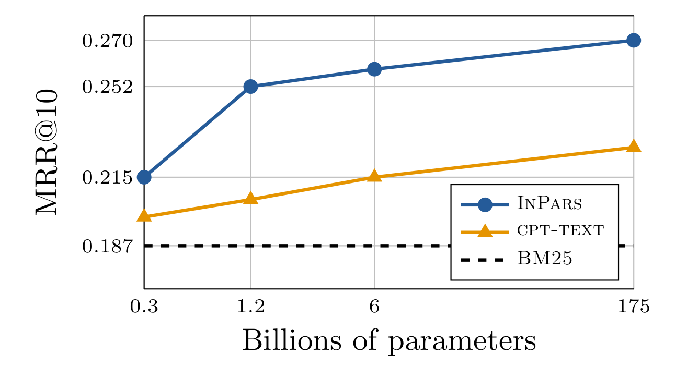

InPars：用少样本大语言模型生成检索训练数据¶
简述：用 3 组示范让 GPT-3 为语料文档生成查询，筛选后训练 monoT5，把大模型的使用集中在离线数据构造阶段。
论文：InPars: Data Augmentation for Information Retrieval using Large Language Models · Bonifacio、Abonizio、Fadaee、Nogueira · 2022-02
方法与实现：GPT-3 Curie → 合成查询与概率过滤 → BM25 + monoT5；英文检索实验。作者项目
论文简介¶
神经检索依赖查询与相关文档标注，而通用数据上的训练未必能迁移到新领域；直接让大语言模型重排大量候选又很昂贵。InPars 用固定的 3 组文档–查询示范，引导 GPT-3 从目标语料生成查询，以平均 token 对数概率筛出高质量正例，再用 BM25 构造负例、微调较小的 monoT5 重排器。仅用合成数据训练的 3B 模型在五个评测集上均超过 BM25；在 MS MARCO 监督模型上继续用域内合成数据微调，还提升了 Robust04 与 TREC-COVID 的零样本迁移结果。不过，同域已充分监督的任务可能退化，生成与过滤质量仍决定训练信号的有效性。
摘要¶
本文把大语言模型的少样本能力用于信息检索训练数据生成。其出发点是：MS MARCO 虽然支持强大的跨任务迁移，却不能同等覆盖所有检索领域。通过从语料文档生成与其相关的问题，作者构造无需逐条人工标注的领域训练集，再用这些数据微调检索模型。
实验表明，合成数据训练的模型优于 BM25 及所比较的自监督稠密检索方法；结合有监督微调后，在三个迁移集合中的两个上取得论文发表时的最优结果。本文实验采用的是重排器；用同样数据训练稠密检索器留作未来工作。
引言：检索成本与领域数据不足¶
预训练语言模型已经具有很强的文本理解能力，但检索系统对推理成本尤其敏感。一条查询常需为 1,000 篇候选文档计算相关性；若每篇文档都经过大模型，成本会随候选规模增长。论文以 2022 年 2 月 OpenAI 最大模型的定价作估算：每篇候选约 250 tokens 时，直接重排 1,000 篇文档约需每查询 15 美元。
稠密检索可以预先计算文档向量，降低在线成本，但大模型编码整个语料仍然昂贵。另一个瓶颈是领域相关性标注：真实查询难以收集，通用标注集训练出的模型也可能在新闻、百科或医学等领域失效。
InPars（Inquisitive Parrots for Search）采用一条数据增强路线：先用大模型离线生成训练样本，再将相关性判断交给成本更低的模型。它不改变检索模型的损失函数，也不要求先在目标语料上做语言模型继续预训练。
相关工作¶
自监督检索以 Contriever、cpt-text 等为代表，从无标注语料中抽取可能相关的文本片段对进行训练。这能利用大量文档，但抽取的文本不一定符合真实搜索查询的表达方式。
查询生成用于领域适配已有先例。Ma 等与 GPL 等工作使用有监督训练的序列到序列模型生成问题，再构造检索训练数据。InPars 的区别是借助大语言模型的上下文学习，只需少量完整示范即可启动生成，无需为问题生成器另外准备大规模任务训练集。
本文的“少样本”指生成提示中只使用 3 组人工示范；后续可以据此产生大量合成对。“无监督”结果指重排器的相关性训练使用合成数据，仍应保留这 3 组提示示范的监督来源。
方法：生成、筛选与重排训练¶
从文档生成相关查询¶
设目标语料为 \(D\)，从中抽取一篇文档 \(d\)。固定提示前缀 \(t\) 包含 \(N\) 组查询及其相关文档：
语言模型 \(G(t,d)\) 根据示范与新文档生成查询 \(q\)，将 \((q,d)\) 作为正训练对。实验取 \(N=3\)；所有待生成文档共用同一组示范，不需要为每篇文档追加人工标注。

图 1（原文 Figure 1）：左上是三组示范与新文档，中间语言模型输出问题 \(q\) 及其生成分数 \(p_q\)；按分数选出的 \((q,d)\) 对用于训练右下方的重排器。生成器负责离线造数据，重排器学习估计文档对查询的相关性。
用生成概率筛选正例¶
作者对每篇文档生成一条查询，并以生成时的平均 token 对数概率给查询评分：
其中 \(|q|\) 是查询 token 数，\(q_{<i}\) 是先前已经生成的内容。分数越高，表示生成器对这条查询的逐 token 续写越有把握。论文从 100,000 个生成对中只保留最高的 \(K=10{,}000\) 对，作为重排训练正例。
过滤是方法的重要组成：在 MS MARCO 上，直接使用全部 100,000 个生成对，比只使用 top-10,000 低约 4 个 MRR@10 点。作者只在 MS MARCO 上比较这一选择，再将相同策略用于其他数据集，避免依赖其他测试集挑选过滤配置。
Vanilla 与 GBQ 两种提示¶

图 2（原文 Figure 2）：两种提示使用相同的三篇 MS MARCO 示范文档，但问题的呈现方式不同。
- Vanilla（左）：每篇文档后接原始 MS MARCO 的
Relevant Query；新文档后以Relevant Query:开始生成。 - GBQ（右，Guided by Bad Questions）：把原始 MS MARCO 查询作为
Bad Question，人工另写一条更依赖文档上下文的Good Question；新文档后以Good Question:开始续写。正文说明模型会生成好、坏问题，训练时只保留好问题。
例如咖啡因段落同时给出孕期建议和每日摄入量。原始问题是“孕期喝一点咖啡因可以吗？”，GBQ 的好问题改成“孕妇可以摄入多少咖啡因？”。加拿大军队段落同时提到人数与历史，GBQ 则用“加拿大武装部队的规模与历史”替代仅问人数的问题。
GBQ 旨在产生更具体、更依赖当前文档的查询。由于它有意偏离 MS MARCO 的原始问题风格，主实验在 MS MARCO 和 TREC-DL 上采用 Vanilla；在 Robust04、NQ 和 TREC-COVID 上采用目标语料文档 + GBQ。
负例构造¶
monoT5 被训练为相关性二分类器，因此每个正例还需配一篇负文档。作者以合成查询 \(q\) 在同一语料 \(D\) 中用 BM25 召回 top-1,000，再从中随机选一篇作为 \(d^-\)，组成 \((q,d^-)\)。
训练数据因而是 \((q,d^+,d^-)\) 三元组；正文档来自生成查询时使用的源文档，负文档来自 BM25 的候选。GBQ 中的“坏问题”没有被用于负例训练，这一方向在结论中被列为后续工作。
实验设置¶
数据集与指标¶
| 数据集 | 语料与查询规模 | 评测任务与指标 |
|---|---|---|
| MS MARCO passage | 880 万段落；约 50 万训练对；开发集约 6,900 查询 | 搜索查询到相关段落，MRR@10；测试集不公开，本文报告开发集 |
| TREC-DL 2020 | 与 MS MARCO 共用语料；54 查询，相关性判定更充分 | MAP、nDCG@10 |
| Robust04 | 52.8 万新闻文档；249 查询；平均每查询 1,250.6 篇已判定文档 | 新闻检索，MAP、nDCG@20 |
| Natural Questions（BEIR 版） | 260 万维基百科段落；3,452 查询；平均 1.21 篇相关文档 | 真实 Google 问题检索，nDCG@10 |
| TREC-COVID（BEIR 版） | 17.1 万篇科学文献；50 查询；平均每查询 1,326 篇已判定文档 | COVID-19 文献检索，nDCG@10 |
MRR@10 侧重首个相关结果的排名；nDCG 衡量排序前部的分级相关性质量，MAP 汇总相关文档在不同位置的精度。TREC-DL 的查询虽少，但每条查询有更充分的文档判定，与 MS MARCO 的稀疏标注互补。
数据生成配置¶
| 配置 | 论文设定 |
|---|---|
| 生成模型 | GPT-3 Curie；论文根据公开资料推断约 6B，参数量不是 OpenAI 的明确披露 |
| 文档采样 | 每个集合随机取 100,000 篇；不足 300 字符则重新采样；有标题时放在正文前 |
| 提示 | 固定 3 组 MS MARCO 示范；Vanilla 或 GBQ |
| 解码 | 温度 0，贪心生成；最多 64 tokens，以换行结束 |
| 正例过滤 | 按式 (1) 的 \(p_q\) 取 top-10,000 |
| 生成成本 | 当时用 Curie 生成 100,000 个问题约 100–300 美元 |
温度 1.0 的采样与 \(p=0.95\) 的 top-p 也被尝试过，最终检索指标没有观察到显著差异。作者比较 Ada、Babbage、Curie、Davinci 后，认为更贵的 Davinci 只带来边际改善，因此主实验统一采用 Curie。
重排器训练与推理¶
作者用 Pyserini 建立 BM25 索引，推理时先召回 1,000 篇候选，再由 monoT5 重排。每个集合训练一份模型，不使用 BM25 原始分数与重排分数融合。
| 配置 | 论文设定 |
|---|---|
| 模型 | monoT5-base（220M）与 monoT5-3B |
| 学习率 | 恒定 \(10^{-3}\) |
| Batch size | 128，正负样本各半 |
| 步数 | 156，约一个 epoch |
| 随机性 | 报告 3 个种子的平均；样本顺序可使最终指标相差最多约 2 点 |
| 输入 / 输出 | 最多 512 输入 tokens；2 个输出 tokens（目标 token 与结束符） |
| 训练硬件 | Google TPU v3-8；两个规模都可在数分钟内完成微调 |
NQ 和 TREC-COVID 的输入经常被截断。Robust04 是长新闻文档，训练与推理采用修改后的 MaxP：以 10 句窗口、步长 5 句切分，分别判断各窗口的相关性，再取最高分作为文档分数。
另一组比较直接用 OpenAI Search API 重排 BM25 的 100 篇候选。其 API 内部是否做过检索微调、采用什么提示并未公开。因成本原因，作者只补做一次 Curie 重排 1,000 篇的实验，TREC-DL nDCG@10 从 0.5422 提升至 0.5602；主表中两类方法的重排深度因此需要分别保留。
主要结果¶
仅用合成数据训练¶
下表保留原文 Table 1 中的无监督与直接 API 重排比较。TRECC 表示 TREC-COVID；“—”是未报告，美元符号表示因成本过高未运行。
| 方法 | MARCO MRR@10 | DL MAP | DL nDCG@10 | Robust MAP | Robust nDCG@20 | NQ nDCG@10 | TRECC nDCG@10 |
|---|---|---|---|---|---|---|---|
| BM25 | 0.1874 | 0.2876 | 0.4876 | 0.2531 | 0.4240 | 0.3290 | 0.6880 |
| Contriever（自监督） | — | — | — | — | — | 0.2580 | 0.2740 |
| cpt-text（自监督） | 0.2270 | — | — | — | — | — | 0.4270 |
| OpenAI Search Ada，重排 100 篇 | $ | 0.3141 | 0.5161 | 0.2691 | 0.4847 | 0.4092 | 0.6757 |
| OpenAI Search Curie，重排 100 篇 | $ | 0.3296 | 0.5422 | 0.2785 | 0.5053 | 0.4171 | 0.7251 |
| OpenAI Search Davinci，重排 100 篇 | $ | 0.3163 | 0.5366 | 0.2790 | 0.5103 | $ | 0.6918 |
| InPars monoT5-220M，重排 1,000 篇 | 0.2585 | 0.3599 | 0.5764 | 0.2490 | 0.4268 | 0.3354 | 0.6666 |
| InPars monoT5-3B，重排 1,000 篇 | 0.2967 | 0.4334 | 0.6612 | 0.3180 | 0.5181 | 0.5133 | 0.7835 |
3B 的合成数据模型在五个集合上均优于 BM25。例如 MS MARCO 的 MRR@10 从 0.1874 提高到 0.2967，TREC-COVID 的 nDCG@10 从 0.6880 提高到 0.7835。220M 则没有同样稳定的优势，在 TREC-COVID 上仍低于 BM25。
作者将效果归因于三点：交叉编码器能联合建模查询–文档交互；生成问题比从文档抽取的句子更接近搜索查询；新查询与原有标注之外的文档增加了训练多样性。这些是论文对结果的解释，实验并未单独控制每个因素来分离其贡献。
监督模型再做域内合成训练¶
原文 Table 1 的另一部分比较 MS MARCO 监督训练及其迁移结果。miniLM 的 MS MARCO 数字来自 Reimers 与 Gurevych，其 NQ、TRECC 数字来自 BEIR；其余条目按原表保留。
| 方法 | MARCO MRR@10 | DL MAP | DL nDCG@10 | Robust MAP | Robust nDCG@20 | NQ nDCG@10 | TRECC nDCG@10 |
|---|---|---|---|---|---|---|---|
| Contriever，MS MARCO 监督 | — | — | — | — | — | 0.4980 | 0.5960 |
| cpt-text，MS MARCO 监督 | — | — | — | — | — | — | 0.6490 |
| ColBERT-v2 | 0.3970 | — | — | — | — | 0.5620 | 0.7380 |
| GPL | — | — | — | — | — | — | 0.7400 |
| miniLM reranker | 0.3901 | — | — | — | — | 0.5330 | 0.7570 |
| monoT5-220M，MS MARCO 监督 | 0.3810 | 0.4909 | 0.7141 | 0.3279 | 0.5298 | 0.5674 | 0.7775 |
| monoT5-3B，MS MARCO 监督 | 0.3980 | 0.5281 | 0.7508 | 0.3876 | 0.6091 | 0.6334 | 0.7948 |
| 上述 3B 再用域内合成数据微调 | 0.3894 | 0.5087 | 0.7439 | 0.3967 | 0.6227 | 0.6297 | 0.8471 |
继续做域内训练后，Robust04 的 nDCG@20 从 0.6091 → 0.6227，TREC-COVID 的 nDCG@10 从 0.7948 → 0.8471。论文将这两个集合的结果视为当时的零样本迁移最优。Robust04 上使用其人工标注训练的 PARADE 不在这组零样本比较范围内。
另一方面，NQ 略降，MS MARCO 与 TREC-DL 也下降。作者认为，随机抽出的语料可能包含广告、脚注或多主题段落，与已有约 530,000 条人工相关对的分布不同；在已经充分监督的同域模型上继续训练合成数据，可能损害原分布的表现。
原文脚注还区分了监督起点：MS MARCO 与 TREC-DL 的 monoT5 起点在 MS MARCO 上训练 10 epochs；三个迁移集合使用 1 epoch 的起点，因为它的零样本效果更好。
消融与分析¶
提示与来源语料¶
原文 Table 2 比较两种组合：MS MARCO 文档 + Vanilla，以及目标集合文档 + GBQ。对于共用 MS MARCO 语料的 MARCO 与 TREC-DL，文档是否“域内”不构成语料来源差异。
| 重排器 | 生成文档 / 提示 | MARCO MRR@10 | DL MAP | DL nDCG@10 | Robust MAP | Robust nDCG@20 | NQ nDCG@10 | TRECC nDCG@10 |
|---|---|---|---|---|---|---|---|---|
| 220M | MARCO / Vanilla | 0.2585 | 0.3599 | 0.5764 | 0.2242 | 0.4017 | 0.3755 | 0.6727 |
| 220M | In-domain / GBQ | 0.2279 | 0.3354 | 0.5451 | 0.2490 | 0.4268 | 0.3354 | 0.6666 |
| 3B | MARCO / Vanilla | 0.2967 | 0.4334 | 0.6612 | 0.3397 | 0.5478 | 0.4870 | 0.7606 |
| 3B | In-domain / GBQ | 0.2819 | 0.4100 | 0.6255 | 0.3180 | 0.5181 | 0.5134 | 0.7835 |
MS MARCO 与 TREC-DL 都更适合 Vanilla 风格。3B 的域内 GBQ 在 NQ 和 TREC-COVID 上更好，Robust04 则是 MARCO / Vanilla 更高；220M 也没有统一胜者。因此表格支持提示、领域与模型规模共同影响结果，并不支持“域内 GBQ 在所有域外集合都更高”。原文对这点的文字概括较强，此处按表格呈现。NQ 域内 3B 在 Table 1 写作 0.5133、Table 2 写作 0.5134，分别保留原值。
生成问题的具体性¶
附录 Table 3–5 给出了完整生成样本。以下摘出不同集合中的代表例子。
| 来源 | Vanilla 或 Bad Question | GBQ 或 Good Question |
|---|---|---|
| Robust04：韩国总统与朝鲜政策 | 总统对朝鲜的立场是什么？ | 韩国总统对朝鲜的立场是什么？ |
| Robust04：商品市场与基金交易 | 黄金价格是多少？ | 商品基金对金属价格有什么影响？ |
| TREC-COVID：疫情中的医学伦理 | Beauchamp 与 Childress 的伦理原则是什么？ | 这些伦理原则如何适用于 COVID-19 大流行？ |
| NQ：1993 年迈阿密海豚队赛季 | Dan Marino 发生了什么？ | 1993 年迈阿密海豚队发生了什么？ |
GBQ 倾向补足实体身份、主题关系或文档范围，使问题更依赖当前段落；这也是作者希望降低泛问题造成的假负例的原因。样例仍有明显局限，例如关于封控期间青少年饮食变化的文献，其好问题仍只是“COVID-19 是什么，它如何影响青少年？”，未完整体现文档的饮食主题。
生成模型规模¶

图 3（原文 Figure 3）：横轴按对数尺度展示 Ada、Babbage、Curie、Davinci 的推断参数规模，纵轴是 MS MARCO MRR@10。重排器始终为 monoT5-220M，只有数据生成模型变化。生成器越大，InPars 曲线整体越高，但从 Curie 到 Davinci 的收益已较小；cpt-text 与 BM25 为比较基线。Curie 对应的表内结果为 0.2585。
论文据此选择 Curie 作为成本与效果的折中。作者的假设是，更大的生成器能写出更贴合当前文档的问题，减少多个文档都能回答的宽泛查询，从而降低负例噪声。
生成问题是否只是复述已有标注¶
作者检查 Davinci 生成查询与 MS MARCO 的字符串重合：93,200 条不重复问题中，5,285 条能在约 100 万原始问题里找到，低于 5.7%；这些重合多为单实体短问题。
在 6,396 篇已有相关性标注的文档上生成的问题中，725 条能在 MS MARCO 标注问题里找到，低于 12%。论文将其视为没有大量直接记忆原问题的证据；这一分析没有揭示 GPT-3 的实际训练语料。
结论与未来工作¶
InPars 展示了一种使用大语言模型改进检索的方式：少量示范 → 领域查询生成 → 质量筛选 → 重排器训练。大模型在离线阶段提供训练信号，在线仍使用 BM25 与 monoT5；因此可以利用大模型能力，同时避免每次检索都支付大模型重排成本。
实验最明确的结论是：少量示范生成并筛选的数据足以训练出强于 BM25 的 3B 重排器；域内合成数据能改善部分迁移任务，却不保证继续提升已经充分监督的同域模型。
论文留下四个方向：用合成数据训练稠密检索器、利用坏问题构造负训练例、将数据规模扩展到百万级，以及改进正训练对的选择方法。